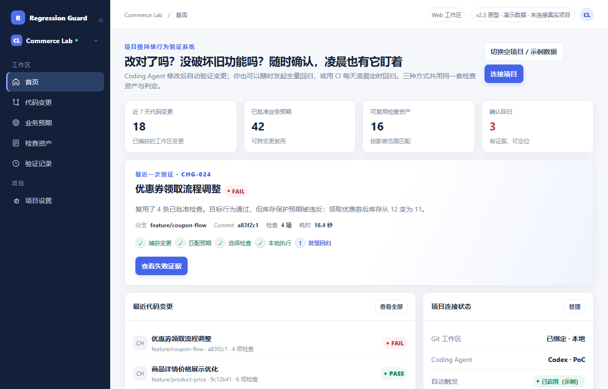

01
捕获变更
收齐开发者诉求、Agent 摘要、Git 改动与相关项目上下文。
变更上下文AI 写代码的速度，已经超过任何人能逐行复核的速度。Regression Guard 验证这次修改应该做到什么、又不许弄坏什么——自动执行，并给出能直接递给评审者的证据。
围绕你现有的项目与 Playwright 检查构建按本地执行设计，源码不上传
期望库存：12
实际观测：11
领券流程似乎触发了非预期的库存扣减。
跟着一次代码变更走完整个流程：识别目标行为、复用已批准的检查、说清证据究竟证明了什么。
读取变更上下文，把「这次应该做到什么」和「那些不许被弄坏的既有行为」分开。
变更上下文、业务预期、可复用检查与确定性执行是一个闭环，不是四个互不相干的功能。
收齐开发者诉求、Agent 摘要、Git 改动与相关项目上下文。
变更上下文找出目标行为，以及必须保持原样的既有行为。
业务预期先用已批准的检查，只在覆盖不足处补新的。
检查资产在目标代码版本上执行，采集相关观测结果。
PLAYWRIGHT + 证据输出 PASS / FAIL / UNKNOWN，附上能据以行动的证据。
可信反馈
工作台原型实拍——浅色界面，示例数据。上方深色面板是概念稿，已明确标注。
一条回归检查应该沉淀成项目资产，而不是为单次运行写下的一次性代码。
已批准的预期与对应检查，会带到之后的改动里。覆盖越厚，重复的人工分析越少——但不会偷偷改变团队认定的「正确」。
了解内测* 资产状态为示例，非实时产品数据
浏览器跑通，不等于改动正确。结论必须站在「已批准的预期」和「充足的证据」上。
所有必需预期都有充足证据，表明观测到的行为与批准的预期一致。
证据显示，至少一条必需预期被实际行为违反。
证据缺失、执行未完成，或结果无法可靠归因于这次改动。
一个验证工具，不能在降低回归风险的同时自己引入新的风险。以下是产品遵循的设计原则。
AI 可以提出预期，但新的业务规则不会自己变成「已批准的事实」。
每条结果都写明它对应的代码、检查、预期与环境版本。
测试操作使用显式权限与受控数据；危险操作默认不执行。
证据不全、环境不稳、结果含糊，都报 UNKNOWN，而不是藏起来。
以上是产品的设计原则。部署方式、数据处理、权限与集成承诺，必须在真实实现验证之后，才能作为可运营的安全声明对外表述。
发布前产品的分层草案。目前没有任何套餐可购买，下面每一条权益都是拟议范围，而非已经上线的功能；正式上线前价格都可能调整。
当前引擎在一次常规回归里调用模型 0 次。结论由确定性断言比对人工批准的预期计算得出：判定不经过模型，换模型不会改变历史结论。当前版本不需要配置 API Key。
用模型辅助起草检查步骤、解释失败原因仍属规划，尚未交付。若将来提供，将采用自带 Key：费用由你的服务商直接结算，取决于所选模型、token 用量与验证工作量；我们不转售模型调用，也不打包额度。在没有真实用量数据之前，不给出单次运行的成本区间。
价格与权益均为发布前产品的参考草案。目前没有任何套餐可购买，本页不发生任何支付。
AI 编码在改变团队交付的节奏。这里说明这个产品怎么看待「验证」这件事。
不完全。生成测试只是验证的一部分。产品围绕「理解改动 → 分清目标与保护预期 → 复用已批准检查 → 执行取证 → 给出结论」构建。
不用。优先复用项目已有的检查，缺的才提新的。新的业务预期仍然需要人工审阅批准——目标是消掉重复劳动，不是藏起该做的决定。
不替代。Playwright 是浏览器执行引擎，这一层在它上面：变更理解、预期治理、检查复用、证据采集与判定。
那就判 UNKNOWN，不判 PASS。执行不全、证据不足、环境问题都要留在明面上，让人能查。
集成是工程问题，不是画个图就能承诺的。只有端到端验证过的 Agent 才会被列出来。首版支持一个项目 + 一个 Agent。
没有任何测试系统能诚实承诺这一点。它的价值是降低验证成本、用可追溯的证据提高信心；覆盖的边界始终写在明面上。